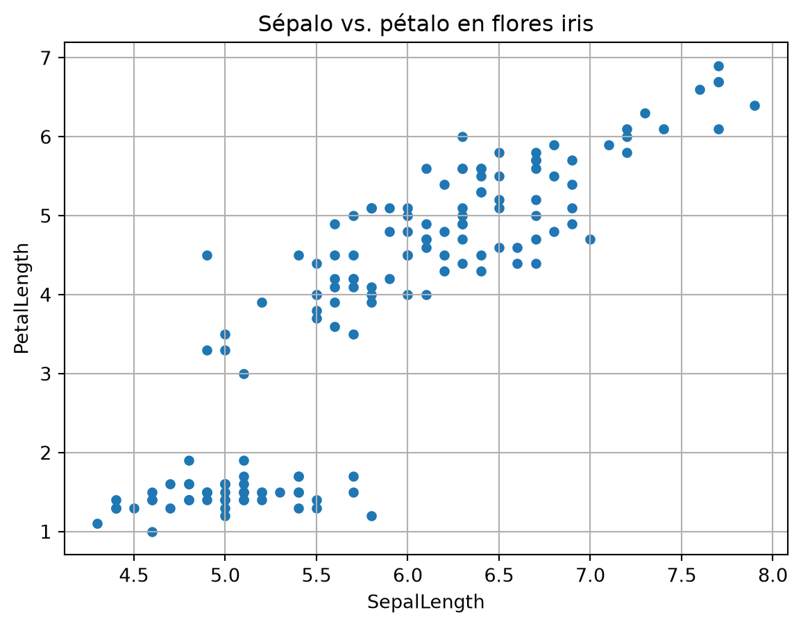
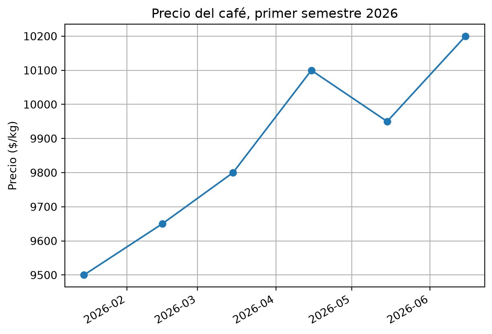

import pandas as pd6 pandas: manejo de datos
NumPy maneja números en arreglos. Pero los datos reales vienen en tablas: filas y columnas con nombres, como una hoja de Excel — ventas por mes, lecturas de sensores, fichas de empleados. La librería que domina las tablas en Python es pandas. Este capítulo es el corazón del análisis de datos.
La convención universal es el apodo pd. En Colab ya viene instalada.
6.1 El DataFrame: una tabla con superpoderes
El objeto central de pandas es el DataFrame. Puedes crearlo desde un diccionario (¿recuerdas las fichas del capítulo 4?):
import pandas as pd
ventas = pd.DataFrame({
"producto": ["café", "cacao", "banano", "café", "cacao", "banano"],
"mes": ["enero", "enero", "enero", "febrero", "febrero", "febrero"],
"cantidad": [120, 80, 200, 135, 75, 220],
"precio": [9500, 8200, 7600, 9600, 8200, 7400]
})
print(ventas) producto mes cantidad precio
0 café enero 120 9500
1 cacao enero 80 8200
2 banano enero 200 7600
3 café febrero 135 9600
4 cacao febrero 75 8200
5 banano febrero 220 7400Cada columna es una Serie (como un array con nombre). Cada fila es un registro. Fíjate que pandas imprime la tabla con su índice a la izquierda.
6.2 Inspeccionar los datos
Lo primero que hace un analista con una tabla nueva: mirarla por encima.
print(ventas.head(3)) # primeras 3 filas producto mes cantidad precio
0 café enero 120 9500
1 cacao enero 80 8200
2 banano enero 200 7600print(ventas.describe()) # estadísticas de las columnas numéricas cantidad precio
count 6.000000 6.000000
mean 138.333333 8416.666667
std 60.387637 934.701378
min 75.000000 7400.000000
25% 90.000000 7750.000000
50% 127.500000 8200.000000
75% 183.750000 9175.000000
max 220.000000 9600.000000print(ventas.info()) # tipos de datos y valores faltantes<class 'pandas.core.frame.DataFrame'>
RangeIndex: 6 entries, 0 to 5
Data columns (total 4 columns):
# Column Non-Null Count Dtype
--- ------ -------------- -----
0 producto 6 non-null object
1 mes 6 non-null object
2 cantidad 6 non-null int64
3 precio 6 non-null int64
dtypes: int64(2), object(2)
memory usage: 324.0+ bytes
None6.3 Seleccionar y filtrar
Seleccionar una columna (el resultado es una Serie):
print(ventas["producto"])0 café
1 cacao
2 banano
3 café
4 cacao
5 banano
Name: producto, dtype: objectFiltrar filas con una condición — esto se llama indexación booleana y es de lo más usado en pandas:
ventas_grandes = ventas[ventas["cantidad"] > 150]
print(ventas_grandes) producto mes cantidad precio
2 banano enero 200 7600
5 banano febrero 220 7400Se lee así: “de la tabla ventas, dame las filas donde cantidad > 150”. La condición produce un True/False por fila, y pandas se queda con las verdaderas.
6.4 Columnas calculadas
Como en NumPy, las operaciones son vectorizadas: se aplican a toda la columna de una vez. Crear una columna nueva es asignarla:
ventas["ingreso"] = ventas["cantidad"] * ventas["precio"]
print(ventas) producto mes cantidad precio ingreso
0 café enero 120 9500 1140000
1 cacao enero 80 8200 656000
2 banano enero 200 7600 1520000
3 café febrero 135 9600 1296000
4 cacao febrero 75 8200 615000
5 banano febrero 220 7400 16280006.5 Agrupar: la pregunta de negocio típica
“¿Cuánto vendimos por producto?” es la pregunta clásica de administración. Con groupby se responde en una línea:
por_producto = ventas.groupby("producto")["ingreso"].sum()
print(por_producto)producto
banano 3148000
cacao 1271000
café 2436000
Name: ingreso, dtype: int64groupby("producto") junta las filas del mismo producto; ["ingreso"].sum() suma el ingreso dentro de cada grupo. También puedes usar .mean(), .count(), .max().
Y ordenar para ver al ganador primero:
print(por_producto.sort_values(ascending=False))producto
banano 3148000
café 2436000
cacao 1271000
Name: ingreso, dtype: int646.6 Leer datos reales: read_csv
Los datos rara vez se escriben a mano: vienen en archivos CSV (valores separados por comas). pandas los lee con una línea — incluso desde una URL, ideal para Colab:
url = "https://raw.githubusercontent.com/plotly/datasets/master/iris.csv"
iris = pd.read_csv(url)
print(iris.head()) SepalLength SepalWidth PetalLength PetalWidth Name
0 5.1 3.5 1.4 0.2 Iris-setosa
1 4.9 3.0 1.4 0.2 Iris-setosa
2 4.7 3.2 1.3 0.2 Iris-setosa
3 4.6 3.1 1.5 0.2 Iris-setosa
4 5.0 3.6 1.4 0.2 Iris-setosaEse dataset contiene medidas de flores iris (largo y ancho de sépalo y pétalo). Ya tienes datos reales en tu programa. En Colab también puedes subir un archivo y leerlo con pd.read_csv("archivo.csv").
Con pandas, la gráfica de un DataFrame es inmediata:
import matplotlib.pyplot as plt
iris.plot(kind="scatter", x="SepalLength", y="PetalLength")
plt.title("Sépalo vs. pétalo en flores iris")
plt.grid(True)
plt.show()
6.7 Series de tiempo (primera mirada)
Las fechas son datos especiales. pandas las entiende si se las presentas bien:
fechas = pd.to_datetime(["2026-01-15", "2026-02-15", "2026-03-15",
"2026-04-15", "2026-05-15", "2026-06-15"])
precio_cafe = pd.Series([9500, 9650, 9800, 10100, 9950, 10200], index=fechas)
print(precio_cafe)2026-01-15 9500
2026-02-15 9650
2026-03-15 9800
2026-04-15 10100
2026-05-15 9950
2026-06-15 10200
dtype: int64Con la fecha como índice, graficar la serie es trivial:
precio_cafe.plot(marker="o")
plt.ylabel("Precio ($/kg)")
plt.title("Precio del café, primer semestre 2026")
plt.grid(True)
plt.show()
En el capítulo 7 usaremos esto para análisis económicos más elaborados.
6.8 Ejercicios
- Crea un DataFrame con 5 empleados (nombre, cargo, salario) y calcula la columna
salario_anual. - Del DataFrame
ventasde este capítulo, filtra las filas donde el ingreso supere $1.500.000. - Agrupa
ventaspormesy calcula el ingreso total de cada mes. ¿Cuál mes fue mejor? - Lee el dataset iris desde la URL y calcula el promedio de
PetalLengthcon.mean(). - Del dataset iris, filtra las flores con
SepalLengthmayor a 6.5 y cuenta cuántas son conlen(). - Mini-reto (agro): construye un DataFrame con las lecturas horarias simuladas de un sensor: columnas
hora(0 a 23),temperatura(valores entre 18 y 34) yhumedad(valores entre 40 y 90). (a) Filtra las horas con temperatura mayor a 30. (b) Calcula el promedio de humedad. (c) Crea la columnaalertaque valgaTruecuando temperatura > 30 y humedad < 50 (pista:(df["temperatura"] > 30) & (df["humedad"] < 50)). (d) Grafica temperatura vs. hora.
6.9 Resumen
- pandas maneja tablas: el DataFrame (tabla) y la Serie (columna).
head(),describe(),info()inspeccionan;df["col"]selecciona;df[condicion]filtra.- Las columnas calculadas son vectorizadas:
df["nueva"] = df["a"] * df["b"]. groupby("col").sum()responde preguntas de negocio por categorías.pd.read_csv()trae datos reales desde archivos o URLs.- Con fechas como índice, las series de tiempo se grafican directo.